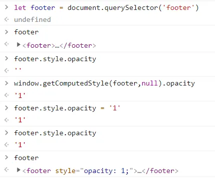

前言
JavaScript是一個在WEB上執行的程式語言，與HTML/CSS不同的是，它是一個真正的程式語言，因此你如果開始學習JS的話那麼恭喜你，你現在已經成為一位真正的網頁製作人員。
網站設立的初衷是將資訊呈現給使用者查看，現今網站透過各種JS效果增強與使用者體驗互動，如果沒有JS的網站我們稱為靜態網站。
在開始撰寫JavaScript前，建議先安裝vs code套件JavaScript (ES6) 在使用時會提示語法幫助學習及提升撰寫速度，但仍然強烈建議須將完整名字了解並記住。
JavaScript使用說明
JS的使用方式有在script標籤內直接使用、src導入的方式導入JS檔案使用、import、export模組化的方式導入，早期網站使用src時會將位置放在head標籤內但隨著網頁技術進步，需要的JS檔案容量與日俱增進而影響載入時間因此將位置改至/body標籤前可以優先載入文字與畫面再載入JS功能，在進行變數或函式命名時建議都以駝峰式命名為主，以下將分成多個單元對JS進行簡單介紹。
console
-
let a = 10 console.log(a)
在開始寫JS前必須先了解瀏覽器中的開發人員工具(F12)console，在JS中使用console.log()功能console面板會顯示對象內的值或執行運算結果，是一個非常實用的功能，在實務上可以透過此方式得知變數當下的值或是有哪些參數可以使用。
變數宣告
- var a = 10
- let b = '10'
- const c = true
宣告a變數將10這個數字放入，var作用域為全域且可以被重複宣告，在錯誤的觀念下容易造成全域變數汙染，支援ES6以上的網站強烈建議改用let
宣告b變數將10這個字串放入，let作用域為區域在同一個作用域內不能被重複宣告，宣告的變數只能在作用域內產生作用，離開則失效
宣告c變數將true這個布林值放入，const又稱常數，宣告時必須賦予型態或值，且無法透過直接修改的方式對值進行修改
雖然JS接受先使用變數再宣告，但這種操作會容易汙染全域變數，一般而言宣告都會放在程式的最頂端容易查看內容及解決程式執行順序的問題。
作用域
在最外層的區域稱為全域，在{}大括號內的區域稱為區域，若是在區域內使用不存在的變數則會從上面外層尋找，在開發專案時若非必要盡量在區域變數內宣告及使用變數避免全域汙染導致計算結果與期望值不同，試著將以下的let改成var後再console面板看看結果!
-
<script> let a = 1 //我在全域位置宣告 { //區域開始 let a = 2 //我在區域內宣告 console.log('內',a) } //區域結束 console.log('外',a) </script>
透過上述範例可得知let在不同的作用域不會互相干擾，而var則會，對於入門的初學者或許可能有些難以理解但是作用域引起的BUG會隨著專案的增大而更容易出現，對於作用域的認知一定要詳細理解
陣列與物件
JS中有兩個非常重要的型態就是陣列與物件，陣列用來儲存多筆資料而陣列的位置稱為索引值索引值的起始值是0而不是1，物件是一種使用自訂名稱紀錄內容或function函式等的資料型態，兩者可以合併使用，試著自行將以下程式碼進行做更改。
-
<script> let group = ['小美','小明','瑪琳','阿力'] console.log(group) console.log(group[2]) </script> -
<script> let groupObj = [ { name:'小美', age:20, gender:'女' }, { name:'小明', age:23, gender:'男' }, { name:'瑪琳', age:18, gender:'女' }, { name:'阿力', age:30, gender:'男' } ] console.log(groupObj[0]) console.log(groupObj[0].name) </script>
不使用索引值印出陣列是印出整個物件內容，而使用索引值則會印出對應的陣列位置內容，針對陣列資料處理最常見是使用迴圈的方式對全部內容進行事件處理
物件中需用「.名稱」的方式呼叫對應的儲存資料，在這邊是常見利用陣列與物件的特性將資料做整合紀錄，經常會使用迴圈功能針對資料做處理如渲染至畫面上或批量修改等動作
型態
JS中型態非常重要，錯誤的型態會造成不可預期的後果，以下是五種JS中最常用到的型態。
- let type1 = true
- let type2 = 10
- let type2Part2 = 1.1+1.3
- let type3 = {name:'小美'}
- let name = '小美'
let type3Part2 = {name} - let type4 = undefined
- let type5 = 'string'
布林值boolean，參數分別為true或false
試著將兩個參數log出查看吧!是否有感覺到出現了不預期的結果?
數字number，參數由負值到0到正值皆為數字型態，特別注意JS的數字處理皆為IEEE 754標準，因此某些情況處理小數點的值時需要做額外的處理如toFixed(2)取小數點至2位數
物件object，用自定義名稱存放內容，內容不限於任何資料，當屬性名與值相同時可以採用type3Part2 ES6縮寫方法
未定義undefined，JS中宣告後未定義的變數或不明確的計算結果會被認定為undefined
字串string，用單引號或雙引號包覆的字元皆為字串
以上是最常見的五種型態，針對無法確認型態為何的情況下可以使用typeof()查看型態，另外兩種Symbol、Bigint可以參考MDN 資料型態，部分參數在使用上須特別注意如數字型態的0在執行布林轉換時雖然本身是一個存在的字元但仍會被轉換成false。
JS中使用=是將右邊的值賦予至左邊稱為傳值，但對象為物件與陣列時JS會採用傳址的方式將值賦予，由於是傳址的方式改動其中一方都會影響雙方，針對傳址傳值的部分可以參考影片Alex 傳值傳址詳細解說，針對純字串的物件資料進行深拷貝可以參考JSON.parse()與JSON.stringify()的功能。
function函式
在JS中函式是一個非常泛用的程式碼執行片段區塊，在JS幾乎每個執行動作都是透過函式進行處理，以下是常見的函式宣告方式。
-
;(function)(){ console.log('hello world!') }() -
(function(){console.log(1)})() ;(function(){console.log(2)})() -
function funcName(){ console.log('my is funcName') } funcName() -
const funcName = (n) =>{ console.log(n) } funcName(10) -
const funcName2 = n => console.log(n) funcName2(10)
立即執行函式，又稱IIFE，通常位於最外層可以將整個JS的功能包覆在區域內執行，透過IIFE可以確保JS的變數或函式不能在console面板被修改，最前方的冒號是在執行程式碼壓縮時阻止ASI自動插入分號機制帶來的錯誤，嘗試將前面的分號拿掉試試看吧!
這是一個基本的函式宣告命名為funcName，可以使用名稱()進行呼叫執行函式，與匿名函式不同，有名稱的函式可以被重複呼叫，如果在不存在函式的作用域下呼叫函式JS會往外層尋找但不會進入其他區域環境內，特別注意用宣告命名函式的方式在執行的時候會將函式放在頂端執行，將函式放入變數後呼叫使用則不會
ES6新增箭頭函式，箭頭函式讓宣告函式的方式變得更簡潔，同樣箭頭函式也能帶入參數執行功能，使用上需注意箭頭函式帶入一個參數時()可以被省略以及箭頭函式不存在自己的this
常見的功能介紹
以下將在JS中經常會用到的函式功能做簡單介紹，某些功能在不同瀏覽器中可能無法使用，建議使用前先參考can i use查看支援版本。
- target.addEventListener
- target.forEach
- target.map
- target.filter
- target.slice
- target.splice
- target.classList
- target.style.class屬性
- target.innerHTML
- target.textContent
- target.toLowerCase
- parseInt(target)
- target.some
- target.every
- target.find
- target.sort
- isNaN(target)
- confirm
- target.join
- target.split
- setTimeout
- setInterval
- event.preventDefault()
- event.stopPropagation()
- window.getComputedStyle
針對DOM元素進行監聽，參數有click(點擊)、mousemove(移動)、resize(調整瀏覽器大小)等等，更詳細參數參考MDN 監聽器說明
與for迴圈相似但無法透過break跳出迴圈，forEach的停止條件為對象的length長度，在對陣列資料進行處理時非常好用，forEach有三個參數分別為當下內容、編號、對象本身
與forEach相似但有回傳值會建立新的陣列
與map相似但只有符合條件篩選後回傳新陣列
可以將對象的陣列內容進行淺拷貝，會回傳一個新陣列
刪除陣列內內容，參數為被刪除的位置 刪除的數量 插入的內容(可不選)
增加或移除class名稱，經常用於觸發動畫事件
修改對象的css屬性，如果使用-字元的style屬性則需轉換成駝峰式寫法如:fontSize
對象為DOM元素，用HTML的方式修改內容(可以使用HTML標籤)
對象為DOM元素，用純文字的方式修改內容(不可使用HTML標籤)
將對象內字串全部轉會成小寫，會回傳內容
將對象的字串轉換成數字型態的整數
檢查對象的內容是否有符合條件會回傳true/false
檢查對象的內容是否全部符合條件會回傳true/false
檢查對象是否有符合的值，有就回傳
對陣列內內容進行排序，根據不同的環境有可能會產生不同的排序結果
檢查對象的值是否為數字型態，會回傳true/false
執行後會產生瀏覽器內建式窗讓使用者選擇確定或取消按鈕，搭配if判斷式使用可以執行不同結果
將陣列內內容轉換為字串
將字串透過自定義條件轉換為陣列
延遲自訂毫秒數後執行一次功能
每間隔自訂毫秒執行功能直到被關閉
阻止預設行為如a標籤的網頁跳轉
阻止事件冒泡
獲取dom當前的css屬性，包含css給予的屬性，與target.style獲取屬性不同的是後者只會獲取element.style的屬性，如果沒有對標籤直接下style或在JS中使用element.style的方式控制屬性的話會無法取得值

以上只針對功能做說明，詳細使用方式參考MDN 內建物件說明，除了以上功能外還有非常多功能/參數這邊未提及如動態參數this、同步與非同步ajax、建構函式class，這些使用方式無法用三言兩語帶過，建議透過各類影片如影片1、影片2以及參考對應的MDN文件。
如果你是第一次接觸網頁技術那麼你的學習路線圖應該為:HTML>CSS>JS>AJAX技術>node管理>前端框架，JS學習的終點雖然是永無止盡的，但是JS的熱門程度卻是直線上升。